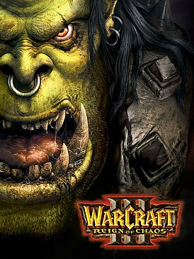

Это Страница про меня
Я Роман, мне 12 лет создаю сайты и обучаюсь в школе KiberOne. Начинающий программист, хочу в будущем стать IT специалистом. Помимо того что я пытаюсь делать сайты, я создаю триггеры для карт в Warcraft 3. Одна из таких карт Ker1z defence.
в школе KiberOne я обучился
- быстро печатать
- писать код
- думать только своей головой
Где находится школа KiberOne
Также у меня есть любимая игра, и возможно вы уже догадались про что я. Моей любимой игрой является стратегия Warcraft 3, она очень тяжелая, но одновременно интересная стратегия. Мало того что в игре присутствует свой сюжет, так еще и дополнения к самой игре тоже имеются.Что мне так нравится в варкрафте? редактор карт, я считают что это не признаный шедевр, где очень просто освоиться и делать триггеры, создавай и властвуй!
